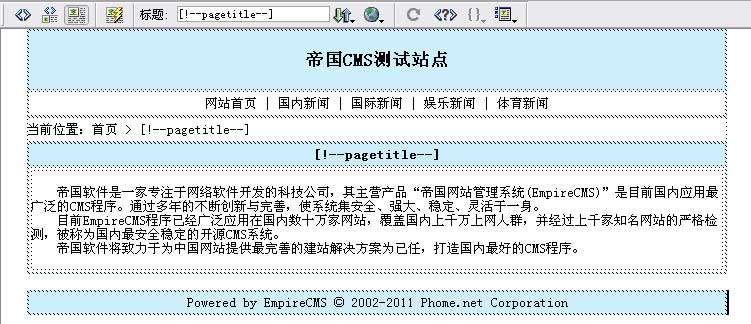
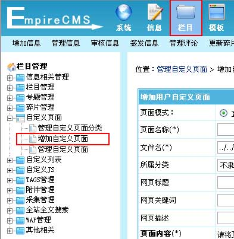
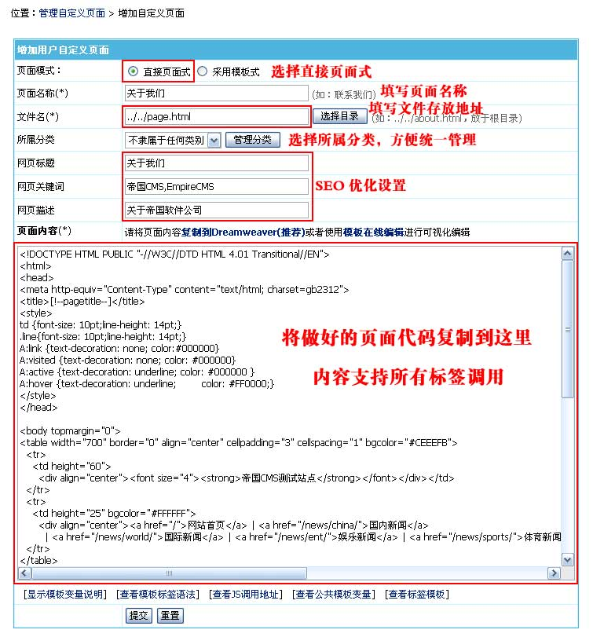
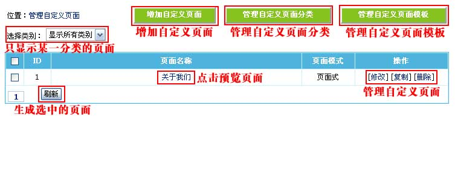
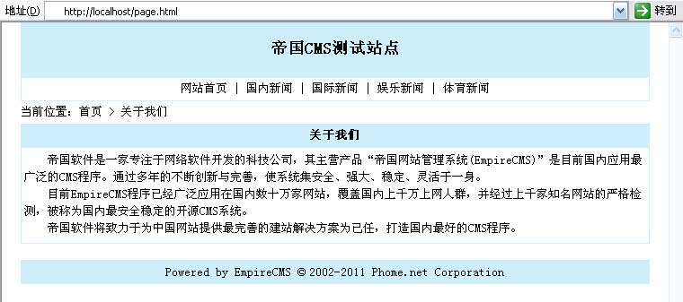
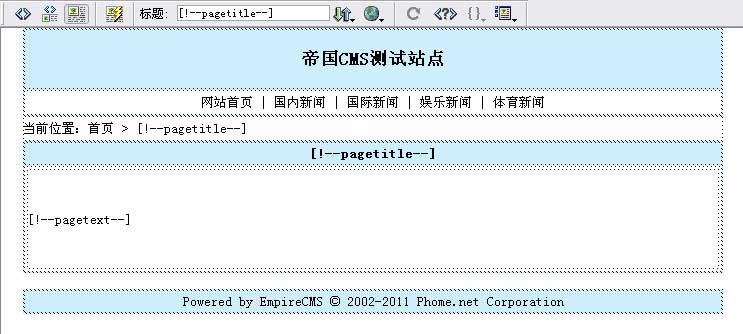
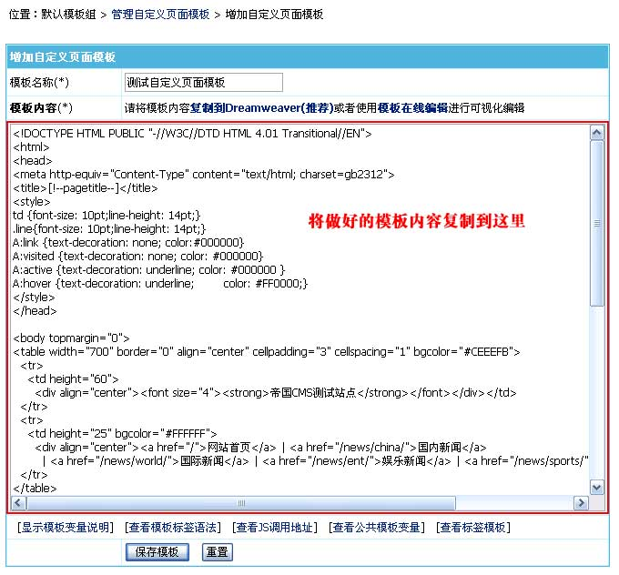
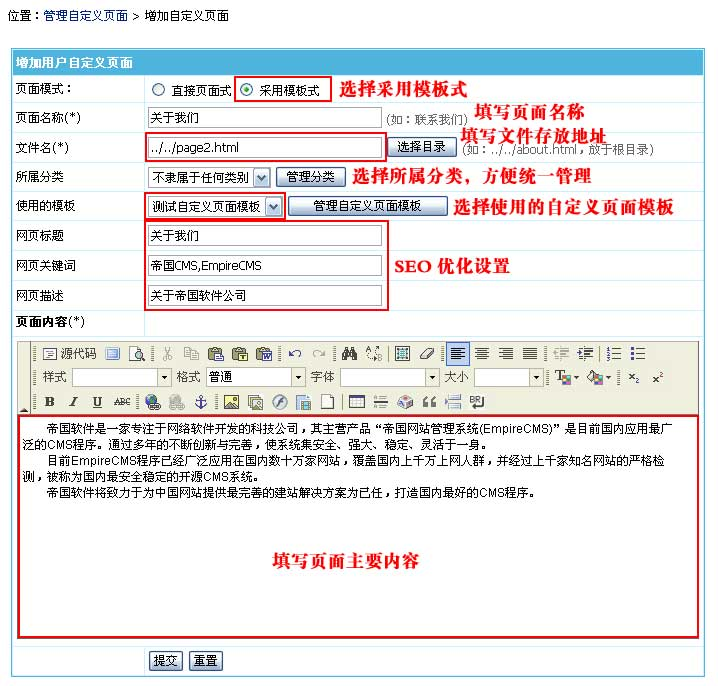
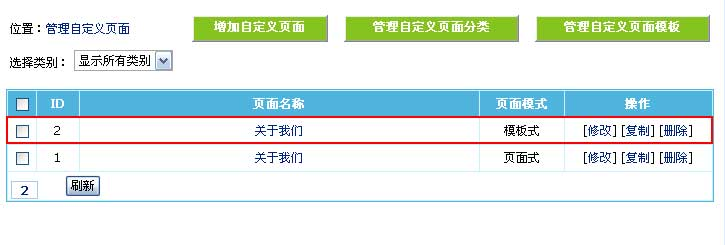
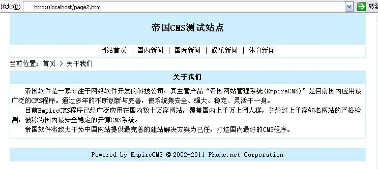

| 二、增加自定义页面 |
| (一)、直接页面式： |
| 1、先用Dreamweaver做好要显示的页面，如下图： |
|  |
| 2、登录后台，单击“栏目”菜单，选择“增加自定义页面”子菜单，进入增加自定义页面界面： |
|  |
| 3、进入增加自定义页面界面，如下图： |
|  |
| 页面模式 |
选择自定义页面使用的模式：直接页面式或模板式。 |
| 页面名称 |
填写页面的名称。 |
| 文件名 |
填写页面文件存放地址（地址从后台目录开始算，“../../”表示在根目录）。 |
| 所属分类 |
选择所属分类，方便统一管理页面。 |
| 网页标题 |
输入站点的SEO标题，该内容显示于页面“网页<title></title>”处。 |
| 网页关键词 |
输入站点的SEO关键字，该内容显示于页面“网页keywords”处。 |
| 网页描述 |
输入站点的SEO描述，该内容显示于页面“网页description”处。 |
| 页面内容 |
整个网页的HTML代码内容（支持所有标签调用）。页面内容可用Dreamweaver可视化编辑。 |
|
| 4、增加自定义页面后，返回管理自定义页面，如下图： |
|  |
| [增加自定义页面]按钮 |
点击进入增加自定义页面。 |
| [管理自定义页面分类]按钮 |
点击进入自定义页面分类管理。 |
| [管理自定义页面模板]按钮 |
点击进入自定义页面模板管理。 |
| [刷新]按钮 |
重新生成选中的自定义页面。 |
|
| 5、点击“关于我们”可看到生成的页面： |
|  |
| |
| (二)、模板式： |
| 1、先用Dreamweaver做好自定义页面模板： |
|  |
| 2、登录后台>“模板”>“自定义页面模板”>“增加自定义页面模板”，里增加制作好的自定义页面模板： |
|  |
| 3、进入增加自定义页面界面，如下图： |
|  |
| 页面模式 |
选择自定义页面使用的模式：直接页面式或模板式。 |
| 页面名称 |
填写页面的名称。 |
| 文件名 |
填写页面文件存放地址（地址从后台目录开始算，“../../”表示在根目录）。 |
| 所属分类 |
选择所属分类，方便统一管理页面。 |
| 使用的模板 |
选择使用的自定义页面模板（详细制作方法可以查看“美工手册”）。 |
| 网页标题 |
输入站点的SEO标题，该内容显示于页面“网页<title></title>”处。 |
| 网页关键词 |
输入站点的SEO关键字，该内容显示于页面“网页keywords”处。 |
| 网页描述 |
输入站点的SEO描述，该内容显示于页面“网页description”处。 |
| 页面内容 |
整个网页的HTML代码内容（支持所有标签调用）。页面内容可用Dreamweaver可视化编辑。 |
|
| 4、增加自定义页面后，返回管理自定义页面，如下图： |
|  |
| 5、点击模板式的“关于我们”可看到生成的页面： |
|  |
| 6、模板式以后修改页面介绍只需要编辑器的内容。 |